Cluster Computing: pass arguments, schedule and check jobs
Nathan M. Muncy
2026-05-07
Purpose
- Knowledge: Learn to schedule flexible jobs
- Skill:
- Pass and capture arguments
- Redirect output and error messages
- Build wrapper and job scripts
- Submit and check jobs
- Why:
- Deploy a common workflow for all subjects
- Protect important scripts from requiring edits
Capture positional arguments
- Recall anatomy of shell command:
$ CMD OPT PARAM$ mkdir -p foo/bar
- Commands have 0-indexed positions
0:mkdir1:-p2:foo/bar
- Positional arguments can be accessed in scripts
- Held in special variable
$[index] - e.g.
$0,$1,$2…
- Held in special variable
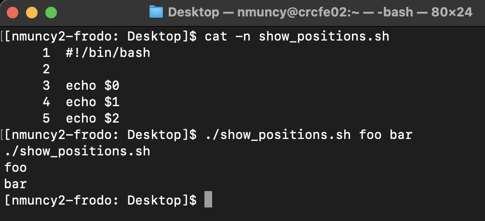
Use positional arguments
- Assign positional argument to variable
- Use variable in script workflow
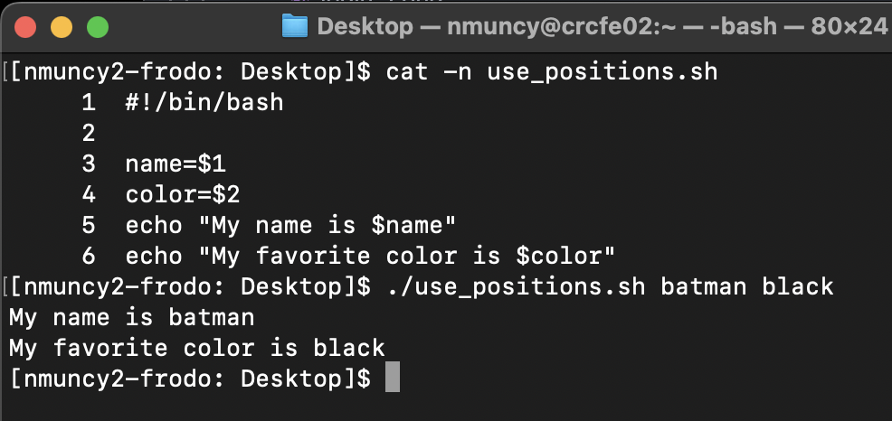
Redirect output: STDOUT
STDOUT: output of succesful jobs (exit status 0)- Designated via
&1 - Normally
&1is the terminal window - Can be redirected to a file with
>>: overwrites>>: appends
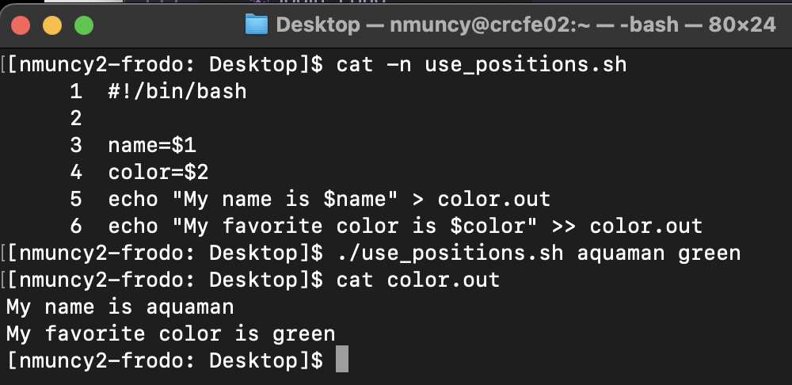
Redirect output: STDERR
STDERR: output of failed jobs (exit status >0)- Designated via
2> - Normally
2>is the terminal window - Can be redirected to a file with
2>2> err.log: send STDERR to err.log2>&1: send STDERR to same location as STDOUTcmd > out.log 2>&1: Send STDOUT and STDERR to out.log
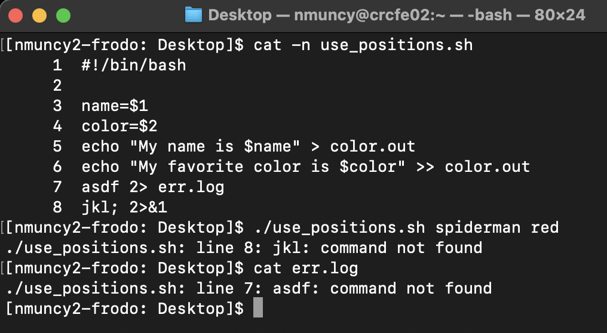
- Notice:
- Line 7 printed to
err.log - Line 8 printed to terminal
- Line 7 printed to
Job Scripts
- Compute environments involve scheduled jobs
- e.g. execute workflow A for subjects 1, 2, and 3
- OK: edit job scripts for each subject
- Better: pass subject number to job script
- Job script purpose:
- Request resources
- Receive arguments
- Execute workflow
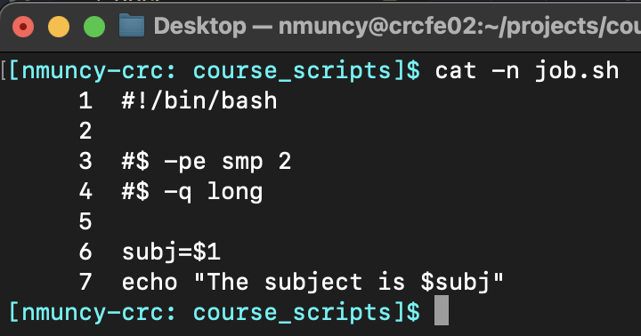
Modules
- CRC supplies software packages as modules
module avail: See available modulesmodule load foo: Load module ‘foo’
- Common: Load modules in job script
- After resource request
- Preferred: Load in project environment
- See Module 2.5
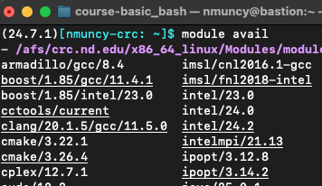
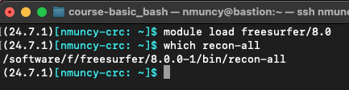
Wrapper Scripts
- Wrapper script purpose:
- Submits job script by envoking
qsubcommand - Passes arguments to the job script
- Submits job script by envoking
- Used as the researcher-editable file
- No need to edit job script
- Researcher could pass args to wrapper script
- (more advanced)
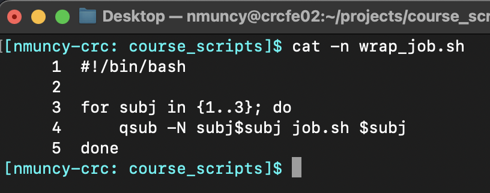
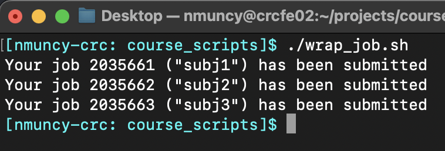
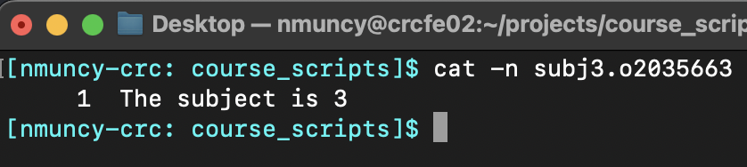
Make log directory
- Scheduled job runs on non-interactive node
- STDOUT and STDERR are sent to
[job_name].o[job_id]
- STDOUT and STDERR are sent to
- Redirect STDOUT and STDERR with
-oand-eoptions- CRC
qsubconfiguration directs2>&1
- CRC
- Good habit to organize STDOUT/ERR in logging directory
- Named for job
- Time stamp helps trouble shoot
- See here for information on
date
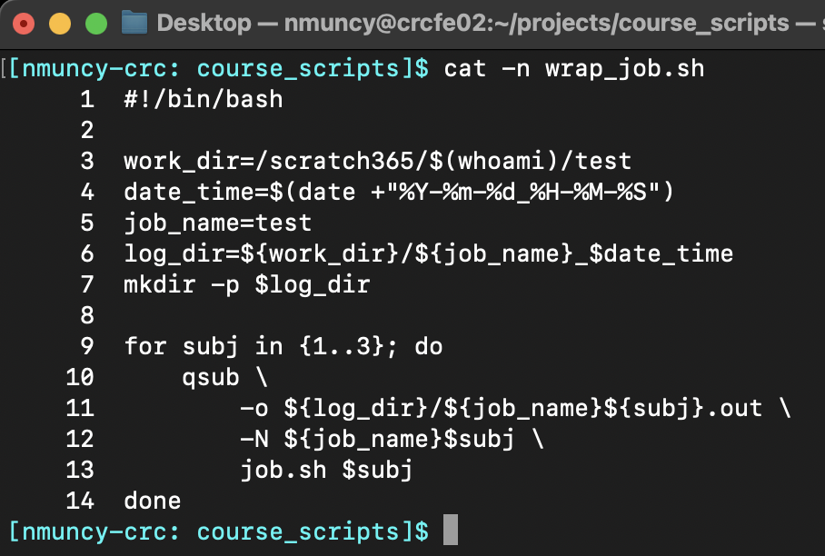
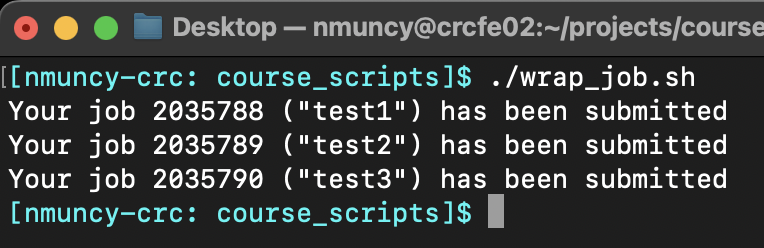
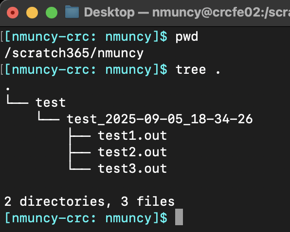
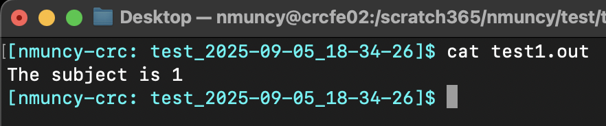
Check status: qstat
- Check status of submitted jobs with
qstatqstat -u username: status for all user jobsqstat -j jobid: status for specific jobs
- Number of statuses possible:
r: job is runningqw: job is queued, waiting for resourcesEqw: invalid job
- See more options here
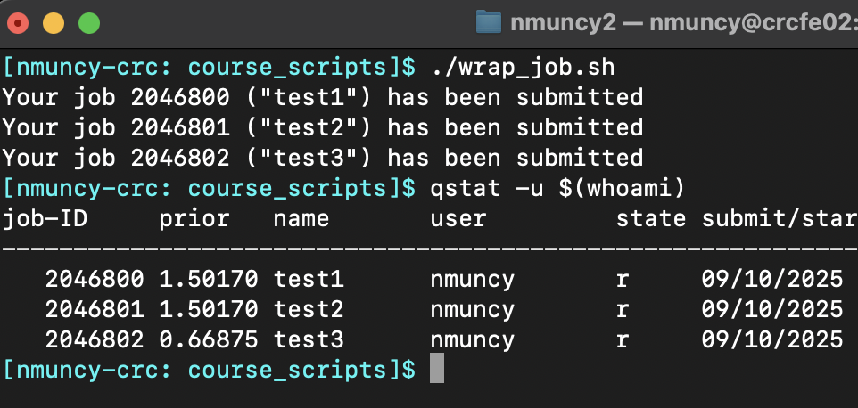
- Set an alias for things your type often!
Delete jobs: qdel
- Sometimes necessary to kill jobs
- Incorrect specification
- Syntax error (e.g. no increment in while loops)
- Determine job ID with
qstat qdel jobid: Terminates specified job- See more options here
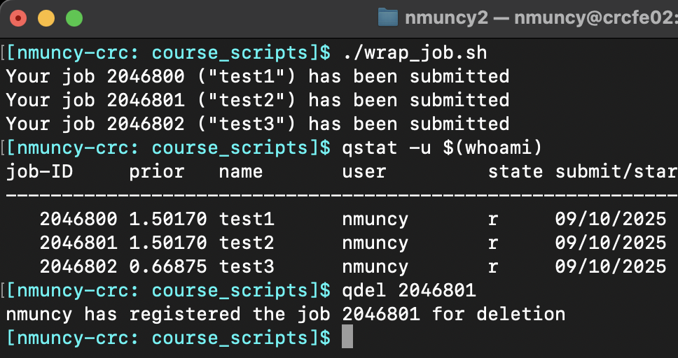
Long queue times
- Sometimes jobs queue (status
qw) for a long time- Beginning of semster (students learning)
- End of semester (students running final projects)
- Teams conducting large analyses
- Your request is large
- Tips:
qstat: (without options) check entire queue
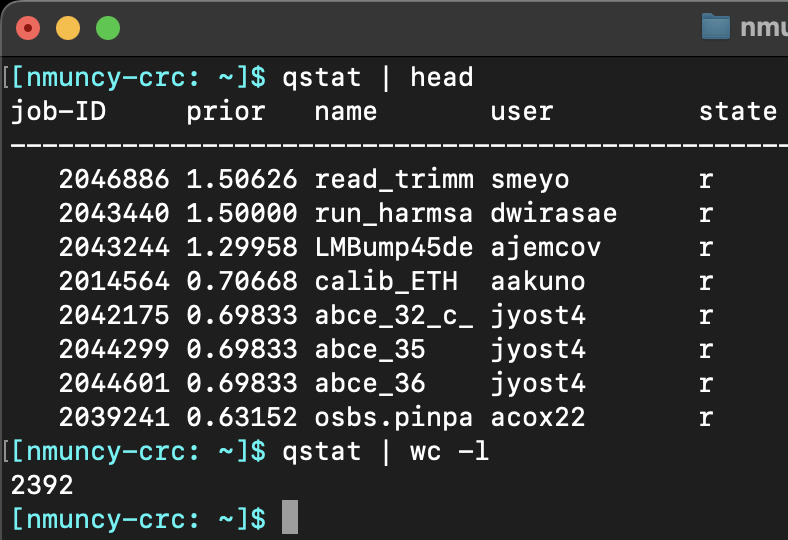
- See here for using
|(pipes)
Check available resources
free_nodes.sh -G: Check usage of CPUs and nodesqstat -u user -g t: Check utilized nodes
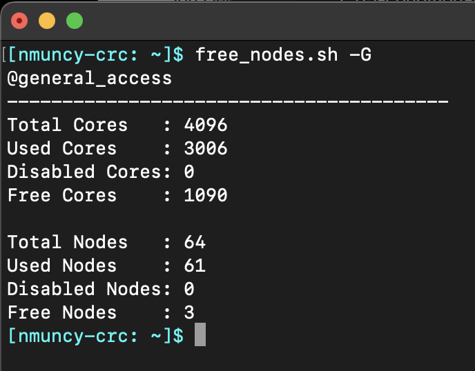
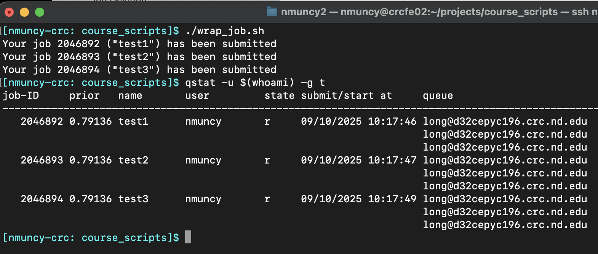

Productivity: schedule jobs